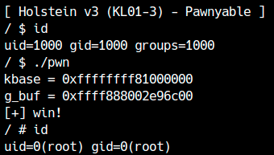

In the previous chapter, we exploited a heap overflow in the Holstein module to escalate privileges. The developers have fixed the vulnerability again and released Holstein v3. In this chapter, we will exploit the improved module.
Patch analysis and vulnerability research
First, download Holstein v3.
There are two main differences from v2. First, open uses kzalloc when allocating the buffer.
1 | g_buf = kzalloc(BUFFER_SIZE, GFP_KERNEL); |
Like kmalloc, kzalloc allocates memory from the kernel heap, but it then fills the memory with zeros. In other words, kzalloc is the kernel equivalent of calloc relative to malloc.
Second, read and write perform size checks that prevent a heap overflow.
1 | static ssize_t module_read(struct file *file, |
Therefore, Heap Overflow cannot occur with this kernel module.
Now let’s examine the implementation of close.
1 | static int module_close(struct inode *inode, struct file *file) |
Because g_buf is no longer needed, it is released with kfree, but g_buf still contains the pointer. If g_buf can be used after close, a use-after-free occurs.
Some readers may think, “After close, you cannot call read or write on that file descriptor, so a use-after-free cannot occur.” That is true, but let’s recall a characteristic of programs running in kernel space.
In kernel space, multiple programs can share the same resources. The Holstein module can be opened by multiple programs, or multiple times by one program. What happens if it is used as follows?
1 | int fd1 = open("/dev/holstein", O_RDWR); |
The first open allocates g_buf, but the second open replaces it with a new buffer. (The old g_buf is not released, causing a memory leak.) Next, closing fd1 releases g_buf. Although fd1 is no longer usable after close, fd2 remains valid, so it can still be used for reading and writing. The supposedly freed g_buf can therefore be accessed, producing a use-after-free.
Kernel-space programs share resources among multiple programs. If you do not design with this in mind, it is easy to introduce vulnerabilities.

At least, a simple vulnerability like this one could have been prevented if the design was such that the pointer was deleted with NULL when closing, or if g_buf was already allocated when opening, it would fail.
We'll find out in the next chapter whether that's really enough.
Avoiding KASLR
First, leak the kernel base address and the address of g_buf.
This vulnerability is a use-after-free, and the buffer size is again 0x400, so we can use tty_struct.
Realization of kROP
We are now ready to use ROP. Prepare a fake tty_operations table and pivot the stack to the ROP chain.
Unlike the previous example, this is a use-after-free, so the reclaimed area is occupied by a tty_struct. Because operations such as ioctl use many fields of tty_struct, using that structure itself for the ROP chain or fake tty_operations can cause unintended behavior and impose severe size/layout restrictions. We therefore reserve the ROP chain in a separate area whenever possible.
To do that, we trigger a second use-after-free. There is only one g_buf, so we first write the ROP chain and fake tty_operations to the known g_buf address. We then trigger another use-after-free and rewrite only the function table of the reclaimed tty_struct, making exploitation more stable.
1 | // ROP chain |
Privilege escalation indicates success. This exploit can be downloaded here.

As such, vulnerabilities such as Heap Overflow and Use-after-Free are often easier to exploit in kernel space than the same vulnerabilities in user space.
This is because the kernel heap is shared, and various structures with function pointers etc. can be used in attacks. Conversely, if you cannot find a structure that can be exploited in the same size range as the object that causes Heap BOF or UAF, it will be difficult to exploit.
Bonus: Avoiding RIP control and SMEP
This time we bypassed all security mechanisms.
previous chapterHowever, as mentioned briefly, when SMAP is disabled and SMEP is enabled, you can use a slightly different and simpler method. When RIP control is achieved, what will happen if we use the following gadget?
1 | 0xffffffff81516264: mov esp, 0x39000000; ret; |
Reserve 0x39000000 in user space with mmap and write a ROP chain in advance, and when you call this gadget, the ROP chain installed in user space as stack pivot will run. In other words, in this case, there is no need to place a ROP chain in kernel space or obtain the address of its heap area.
Please note that RSP should be an 8-byte aligned address. This is because if the stack pointer is not aligned, the program will crash if an instruction that causes an exception is executed.
Also,commit_creds or prepare_kernel_cred When calling a function such as, the stack is consumed, so actually allocate it from before 0x39000000 (about 0x8000 bytes is enough).
Try disabling SMAP and stack pivoting to the userspace ROP chain with a gadget like this to elevate privileges. In addition, when mmaping the pivot destination memory,MAP_POPULATE Let's flag it. By adding this, physical memory is secured and this map can be seen from the kernel even if KPTI is enabled.
modprobe_path Rewriting or cred Let's try elevating privileges using methods that do not use ROP, such as rewriting structures.